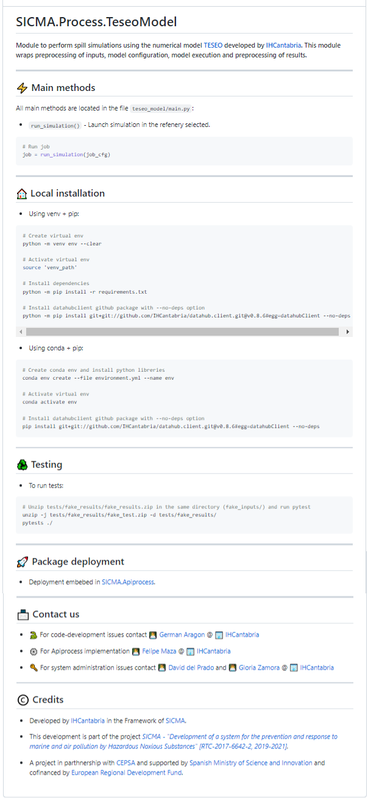
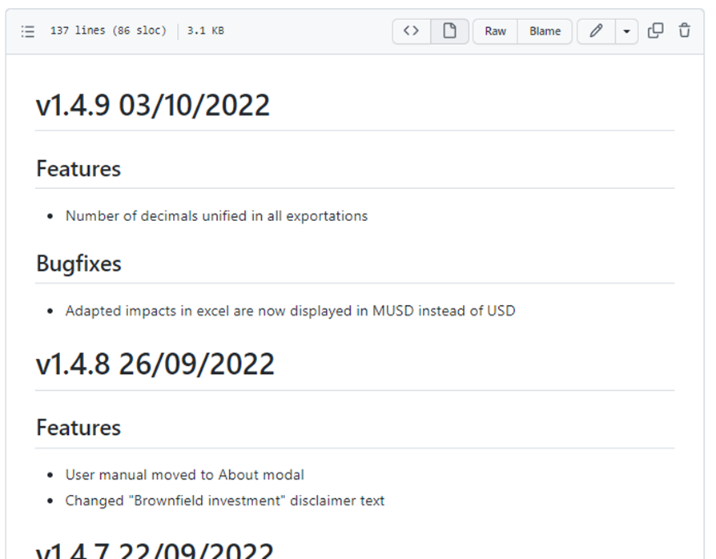

Buenas prácticas
README.md
El fichero README.md colocado en la raíz del proyecto es el fichero que todos consultan primeramente cuando visitan un proyecto, y en GitHub además hacer una preview del él cuando visitamos un proyecto.
En él debemos añadir siempre una serie de apartados que serán muy útiles:
Descripción
Cómo instalarlo
Cómo usarlo
Contacto
Licencia
Cualquier información relevante, nunca está de más.

Changelog.md
En el changelog vamos resumiendo los avances que se realizan en cada versión que se etiqueta.
Aunque la información podría consultarse en el log, aquí encontraremos un resumen fácil de leer y enumerando simplemente las nuevas funcionalidad o correcciones de cada versión.
Si usamos trello o planner, normalmente aquí enumeramos el título de las tarjetas realizadas.

Otras buenas prácticas
Commitsdeben tener un objetivo específico. Evitar resolver dos problemas en el mismocommit.Mensajes de
commitconcisosNo añadir binarios al repositorio, especialmente de gran tamaño (vídeos, PDFs).
Evitar subir datos sensibles como contraseñas.
Evitar reescribir la historia, antes o después nos dará algún disgusto.